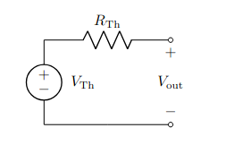
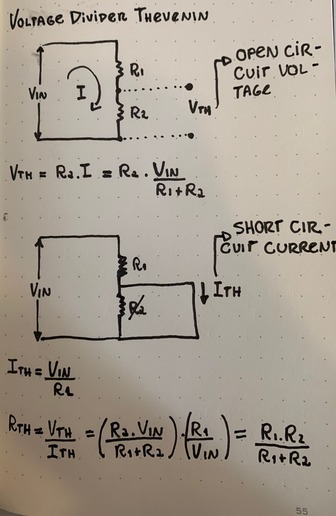

Created at: 2025-01-29
Definition: Any two terminal chain of resistors and voltage sources can be simplified to a single resistor in series with a voltage source.
This implies that any messed up configuration of multiple batteries and resistors can be simplified to a single battery and a single resistor.

V = the open-circuite voltage of the equivalent circuit. R = is find through the short-circuit current of the equivalent circuit.
